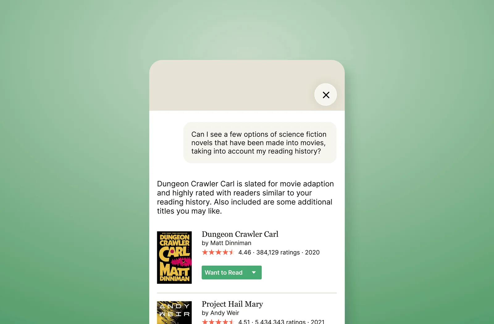
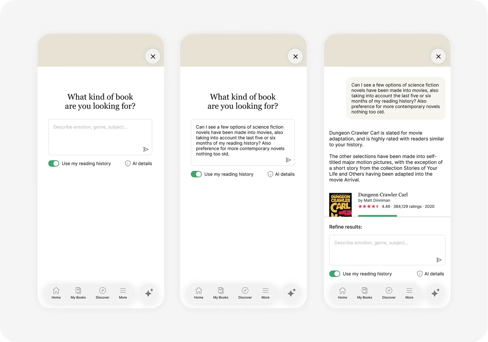
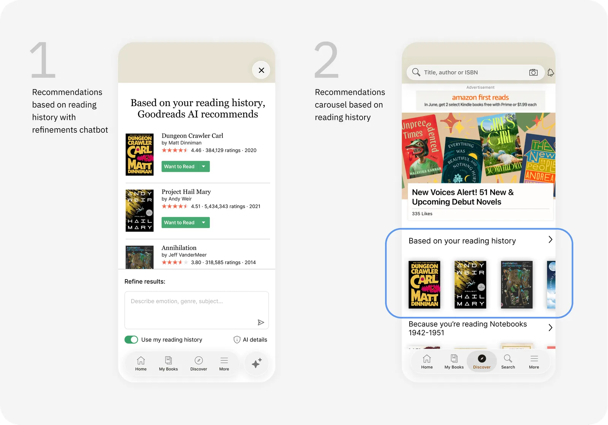
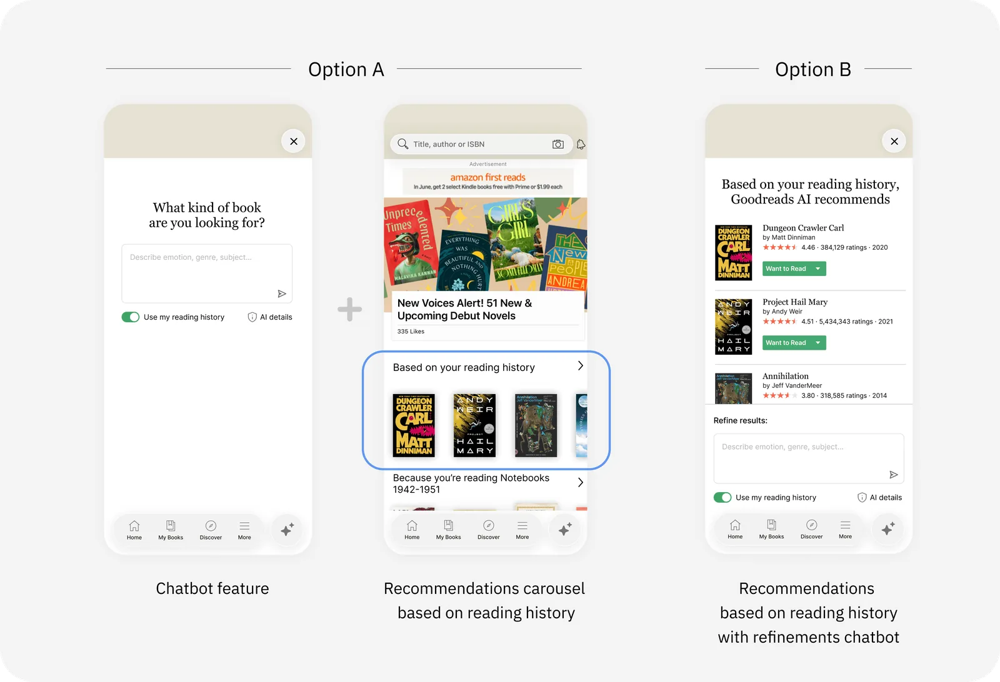

Design for AI
Reading history + AI, built for privacy and trust.

The problem
5 of 8 readers have trouble finding books they like, most often using social media (Goodreads, YouTube, TikTok) for recommendations, and AI chatbots (ChatGPT, Gemini) for more specific recommendations.
User demographics
Exploratory interviews revealed Goodreads as the most cited social media platform for online book-related activity, confirming it as a good platform to build for. Based on Goodreads traffic reports and largely similar survey respondent populations, the following parameters were made to create representative groups for subsequent randomized user testing panels of five participants:
Constraints
Exploratory research confirmed Goodreads as an appropriate platform for the build: it was the most cited platform for book activity, and it already has each user’s reading history. Time and budget were limited.
Exploratory research
A screener survey was built to assess demographics and behavior. A survey was chosen for speed, breadth and specificity.
Eight participants were selected to capture a broad array of reading volumes and styles, with some curve toward Goodreads user behaviors (shown in survey responses as a significantly used platform) and AI familiarity (as most respondents were frequent to occasional users of AI). The survey respondent population largely mirrored Goodreads demographics and behavior.
Video interviews were conducted to capture in-depth qualitative information. Findings are below.
| Book recommendations | |
|---|---|
| 3/8 | Goodreads, friends |
| 2/8 | ChatGPT, Gemini, bookstores, StoryGraph, TikTok |
| 5/8 | Recommendations hit-or-miss |
| 3/8 | Social media trusted most for recommendations |
| 6/8 | Use ChatGPT or Gemini when looking for something specific |
| AI trust | |
| 3/8 | Did not want personally identifying information shared with AI (including mood) |
| 1/8 | Want to know data and confidentiality policies |
| 8/8 | Open to sharing with AI |
| 2/8 | Actively sharing reading history with AI |
| 2/8 | Comfortable sharing around reading history |
| Interest | |
| 3/8 | Emotion of books important |
Ideation
Exploratory research findings were elaborated into user stories to capture a breadth of scenarios, and then deconstructed into the core functionality required by users. A preliminary user flow leveraging the taxonomy was made into a clickable prototype with the aid of Claude, and was quickly deemed too complicated for general use. For ease of use, the user flow was simplified to a basic prompting function. Any taxonomy would just surface naturally in the prompt.
Chatbot for Goodreads
The simplified user flow was elaborated as a Goodreads app feature and run through usability testing.

The chatbot prototype was tested with 5 participants. Everyone reached the goal without error, and all participants liked using their reading history to get recommendations. Testing also revealed areas for improvement and a possible need for automatically populated recommendations (Iteration 4).
“I really hope this becomes a feature, that’s my main thought. I’d like to be able to use this.”
“Seems too complicated for average reader to pinpoint favorite genre, to think and to type.”
| First impression before using | |
|---|---|
| positive5/5 | Understand basic functionality |
| neutral3/5 | Mention reading history function specifically |
| neutral2/5 | Mention “keywords” to enter into input field |
| negative1/5 | Wants multiple choice questions as filter |
| Goal completion | |
| positive5/5 | Successfully receives and reviews all book recommendations |
| Thoughts after using | |
| positive4/5 | Positive: “Straightforward, pretty seamless, very interesting” |
| positive1/5 | Report difficulty finding recommendations on the existing Goodreads app |
| neutral1/5 | Wants more info: “AI” stated upfront, and curious how reading history works |
| negative1/5 | Wants automatic recommendations based on reading history |
| Desire to use product in future | |
| positive4/5 | Definitely want to use |
| neutral2/5 | Want recommendations from friends or influencers |
| negative1/5 | Would not use, prefers to scroll feed |
| Product safety | |
| positive4/5 | Felt safe |
| neutral1/5 | Wants disclosure data before feeling safe |
| Product sentiment | |
| positive4/5 | Really like it |
| negative1/5 | Seems too complicated |
| Reading history feature sentiment | |
| positive5/5 | Like leveraging reading history |
| neutral1/5 | Has questions about how it works |
Automatic variations
One of the usability testing participants found thinking and typing to get recommendations too complicated. This pointed to developing several options that would pre-populate recommendations based on reading history, with and without the option to refine.

Next steps
Incorporate business interests to define which options to pursue and test. Some possible routes are below. Separately, 2 of 5 interviewees mentioned wanting influencer recommendations, so that is a viable route to explore as well.
